10 Thematic Maps with tmap
By the end of this chapter you should be able to:
- Load point, line, and polygon layers into R with
read_sf(), and explain what an sf object is. - Build a map in layers with
tm_shape()andtm_dots(),tm_lines(), ortm_polygons(). - Color features by an attribute, and control the classes with
nandstyle. - Combine several layers in one map, and add a title, a scale bar, and a north arrow.
- Switch between static and interactive maps with
tmap_mode().
The last chapter turned tables into graphs with ggplot2. This chapter turns them into maps. A thematic map shows how one theme, such as tree height, the age of buildings, or the population of cities, varies from place to place. It is the most common kind of map in spatial data science, and in R the quickest way to make one is the tmap package.
The examples use three layers of data about the UNC Chapel Hill campus: its trees, its sidewalks, and its buildings. Between them they cover the three kinds of vector data, points, lines, and polygons, so by the end of the chapter you will have mapped all three.
The code in this chapter needs the tmap and sf packages and data files from your computer, so it doesn’t run in the browser like the code in earlier chapters. Follow along in an R Markdown file in RStudio. The maps you see here were made with exactly the code printed above them.
10.1 Spatial data are tidy data
10.1.1 Features and attributes
Spatial data follow the same tidy rules as any other data frame. In a spatial layer, each row is one feature: one tree, one stretch of sidewalk, one building. Each column is one attribute of those features: a tree’s species or height, a building’s year built or number of floors.
What makes the data spatial is one extra column. The sf package (“simple features”) stores each feature’s shape in a geometry column, as a point, a line, or a polygon. Everything else about an sf object is an ordinary data frame. That means the tidyverse verbs you already know, such as filter(), mutate(), and count(), work on spatial data too, and they keep the geometry attached to each row.
10.1.2 tmap: the thematic mapper
tmap was written by Martin Tennekes. Like ggplot2, it builds a map in layers, joined with +:
tm_shape()names the data to draw.- A layer function draws it:
tm_dots()for points,tm_lines()for lines, andtm_polygons()for polygons. - More functions add the parts of a finished map:
tm_title(),tm_scalebar(),tm_compass(), andtm_layout().
tmap reads sf objects directly, and the same code makes a static map for a report or an interactive web map you can zoom into. This book uses tmap version 4, which changed many argument names. If you find older code online that uses col = for polygon colors or tm_layout(title = ...), it was written for version 3. It will often still run, but tmap prints a message suggesting the new form.
Load three packages at the top of every script:
library(tidyverse)
library(sf)
library(tmap)10.1.3 Our data: three campus layers
The three layers come from UNC’s open data portal, https://gisdata-uncadmin.opendata.arcgis.com (Table 10.1). Download each one as a GeoJSON file and save it in the same folder as your R Markdown file.
| Layer | Geometry | One feature is | Attributes used here |
|---|---|---|---|
| Tree Inventory | Points | One campus tree | COMMONNAME, HEIGHT |
| Sidewalks | Lines | One sidewalk segment | SURFACE_ |
| Building Footprints | Polygons | One building outline | YEARBUILT, FLOORS |
read_sf() reads each file into an sf object:
buildings <- read_sf("Building_Footprints.geojson")
sidewalks <- read_sf("Sidewalks.geojson")
trees <- read_sf("Tree_Inventory.geojson")Run glimpse(trees) to see the attributes, and check that the last column is geometry. Run st_crs(trees) to see the layer’s coordinate system. GeoJSON files always use longitude and latitude, so all three layers share a coordinate system and will line up when you draw them together.
10.1.4 tmap and ggplot2 on the same trees
ggplot2 can draw maps too, with geom_sf(). Here is the same tree layer drawn by each package (Figure 10.1):
trees |>
tm_shape() + tm_dots()
trees |>
ggplot() + geom_sf()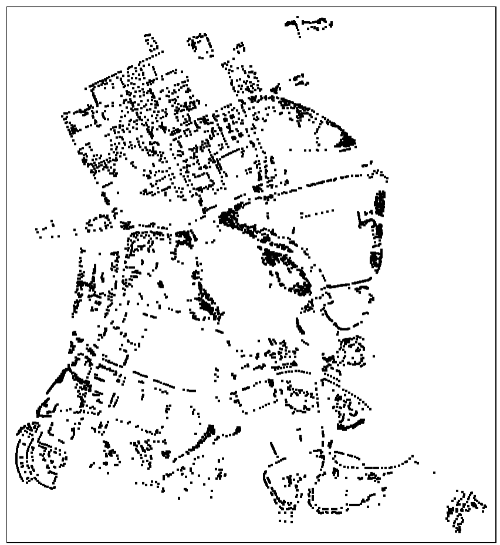
tm_shape() + tm_dots()
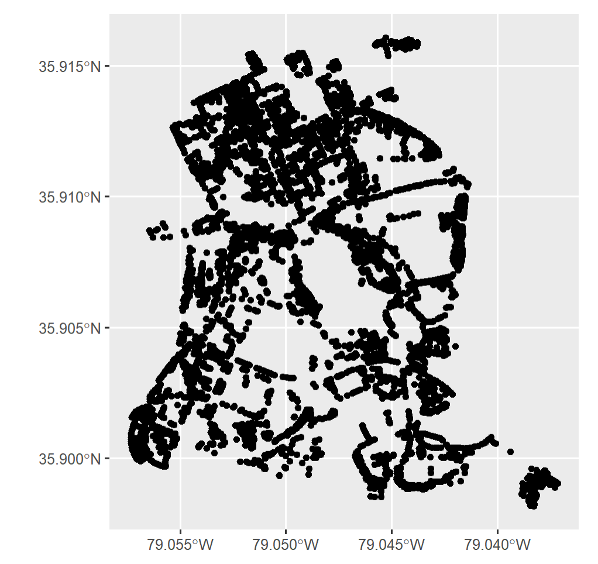
ggplot() + geom_sf()
Both start from the same sf object. tmap gives a clean map frame by default, and has built-in scale bars, north arrows, and an interactive mode. ggplot2 adds axes and a gray panel, as it would for any plot. ggplot2 is the more general tool, and you can make fine maps with it, but for everyday thematic maps tmap takes less code. The rest of this chapter uses tmap.
10.2 Points: mapping trees with tm_dots()
10.2.1 Color trees by height
Each tree in the inventory is one point. To color the trees by height, pass the name of a column to fill, in quotes:
trees |>
tm_shape() +
tm_dots(fill = "HEIGHT") +
tm_layout(bg.color = "gray")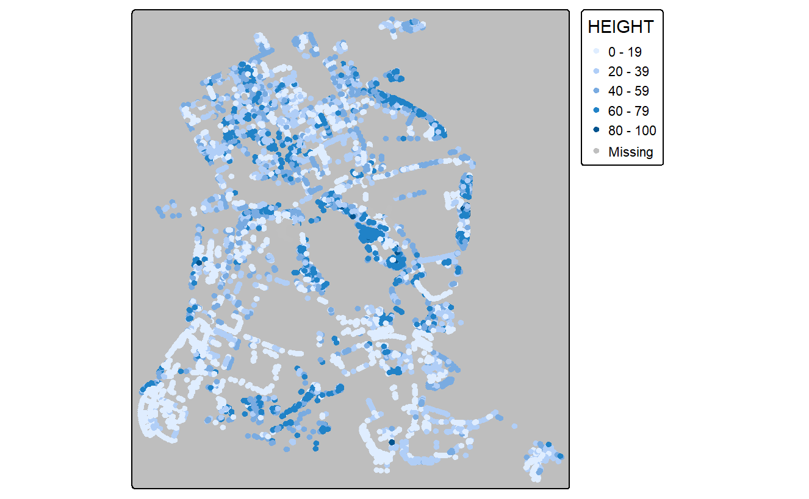
Two details matter. First, the column name goes in quotes, fill = "HEIGHT". (ggplot2’s aes() takes column names without quotes, but tmap wants them as text.) Second, because HEIGHT is a number, tmap uses a sequential palette, a ramp from light to dark, so that taller trees look darker. It also breaks the heights into a few classes, 0–19, 20–39 and so on, and builds the legend.
tm_layout() controls the map as a whole rather than one layer. Here bg.color = "gray" makes the background gray, so the palest dots still show up.
Look at Figure 10.2. Where on campus are the tallest trees? Can you think of a reason why?
10.2.2 Color trees by species
Now try a text column, the species name:
trees |>
tm_shape() +
tm_dots(fill = "COMMONNAME")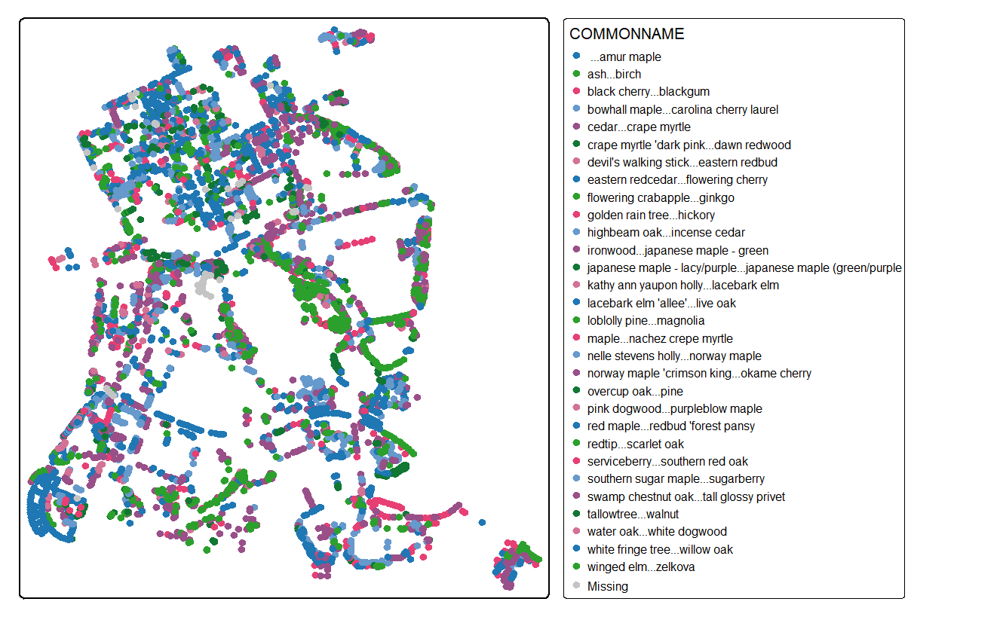
For a text column, tmap uses a qualitative palette: distinct colors with no order, one per category. That works for a handful of categories. With 158 species, the colors repeat and the legend takes up as much room as the map, so you can’t tell which tree is which (Figure 10.3). There are two fixes: map only the most common species, or lump the rare ones together.
10.2.3 Fix 1: map only the top five species
First, find the most common species with count():
trees |>
st_drop_geometry() |>
count(COMMONNAME, sort = TRUE)COMMONNAME.
| COMMONNAME | n |
|---|---|
| oak | 778 |
| holly | 570 |
| loblolly pine | 513 |
NA |
498 |
| maple | 259 |
| willow oak | 234 |
| pine | 229 |
| crape myrtle | 223 |
| hickory | 217 |
| dogwood | 183 |
st_drop_geometry() turns the sf object back into an ordinary data frame. That isn’t required, but it makes counting much faster, because otherwise sf tries to merge the points of every species into one shape. Oak, holly, and loblolly pine lead, and 498 trees have no species name (Table 10.2).
Then filter() to the top five, and map them:
trees |>
filter(COMMONNAME %in% c("oak", "holly", "loblolly pine", "maple", "willow oak")) |>
tm_shape() +
tm_dots(fill = "COMMONNAME", size = 0.05) +
tm_title("UNC Trees") +
tm_layout(bg.color = "lightgray")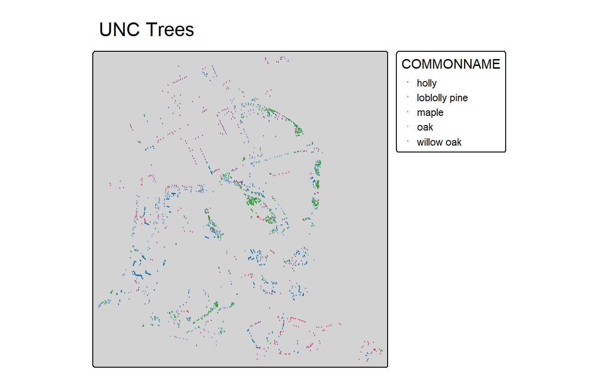
Ordinary tidyverse verbs work on sf objects and keep the geometry, so the filtered trees go straight into tm_shape(). size = 0.05 sets the size of the dots, and tm_title() adds a title. The legend is readable now, but the map has lost more than half the trees.
10.2.4 Fix 2: group rare species as “other”
Instead of dropping the rare species, give them a new label. mutate() makes a new column, name, that keeps the nine most common species and calls everything else “other”:
top_nine <- c("oak", "willow oak", "pine", "crape myrtle", "hickory",
"dogwood", "holly", "loblolly pine", "maple")
trees |>
mutate(name = if_else(COMMONNAME %in% top_nine, COMMONNAME, "other")) |>
tm_shape() +
tm_dots(fill = "name", size = 0.05) +
tm_title("UNC Trees") +
tm_layout(bg.color = "lightgray")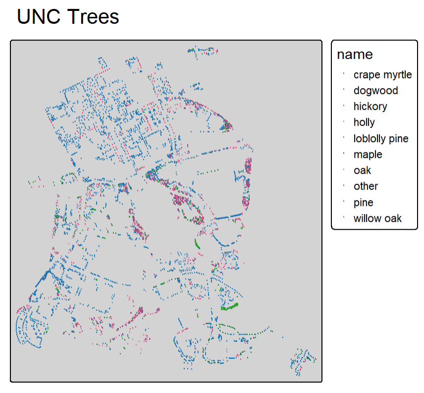
if_else(condition, yes, no) checks each tree: if its species is in top_nine, it keeps the name; if not, it becomes “other”. The 498 trees with no name go to “other” too, because NA %in% top_nine is FALSE. Every tree stays on the map, and ten categories keep the legend readable (Figure 10.5).
10.3 Lines: mapping sidewalks with tm_lines()
10.3.1 Draw the sidewalk network
The sidewalk layer is a network of line segments. tm_lines() is the line version of tm_dots():
sidewalks |>
tm_shape() +
tm_lines()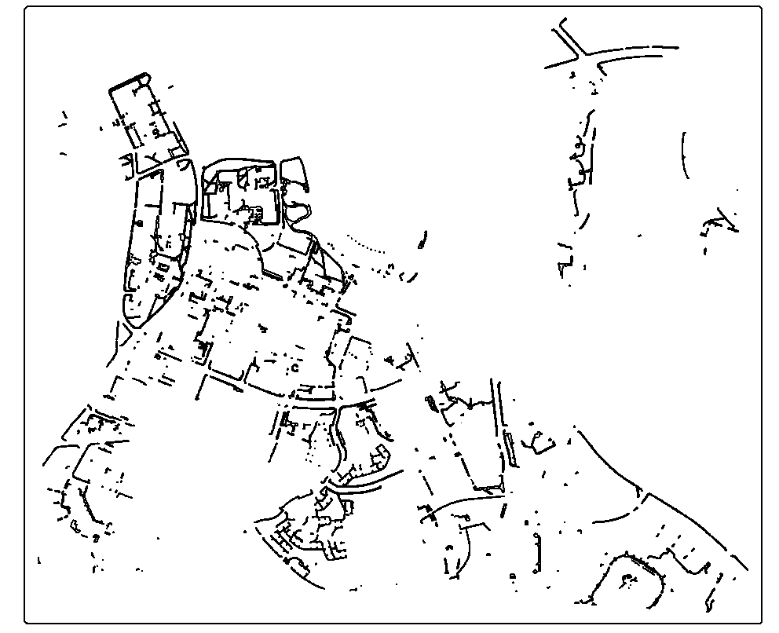
With no arguments, every segment is the same thin black line (Figure 10.6). The gaps on the map are places with no sidewalk data, not places with no pavement: the layer only covers what has been surveyed.
10.3.2 Color sidewalks by surface
sidewalks |>
tm_shape() +
tm_lines(col = "SURFACE_")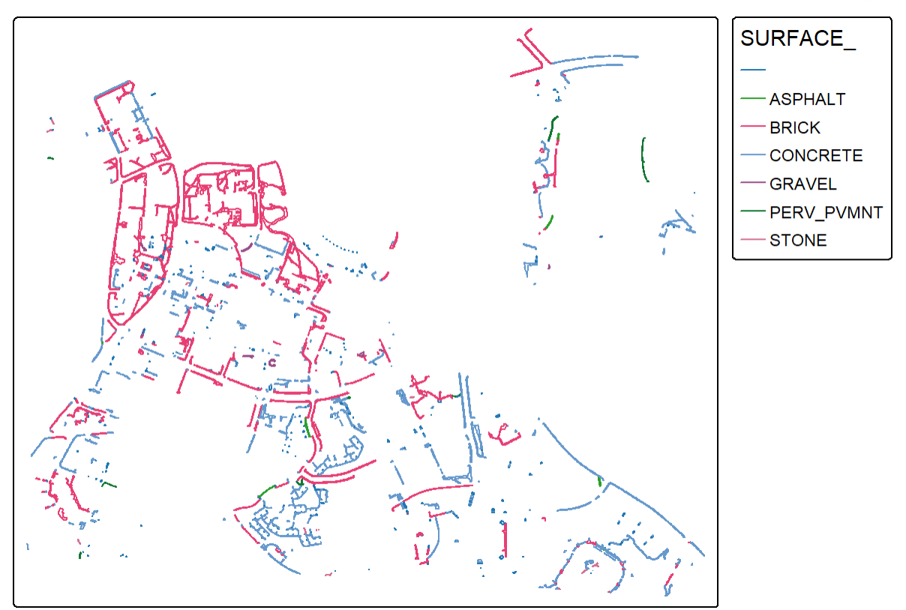
A line has no inside to fill, so lines take col = rather than fill =. SURFACE_ is a text column, so tmap picks a qualitative palette. (The underscore at the end of the column name comes from the source data; you must type it exactly.) Brick and concrete make up most of central campus (Figure 10.7).
10.4 Polygons: mapping buildings with tm_polygons()
10.4.1 Draw the building footprints
Building footprints are areas, so tm_polygons() draws each one with a fill and an outline:
buildings |>
tm_shape() +
tm_polygons()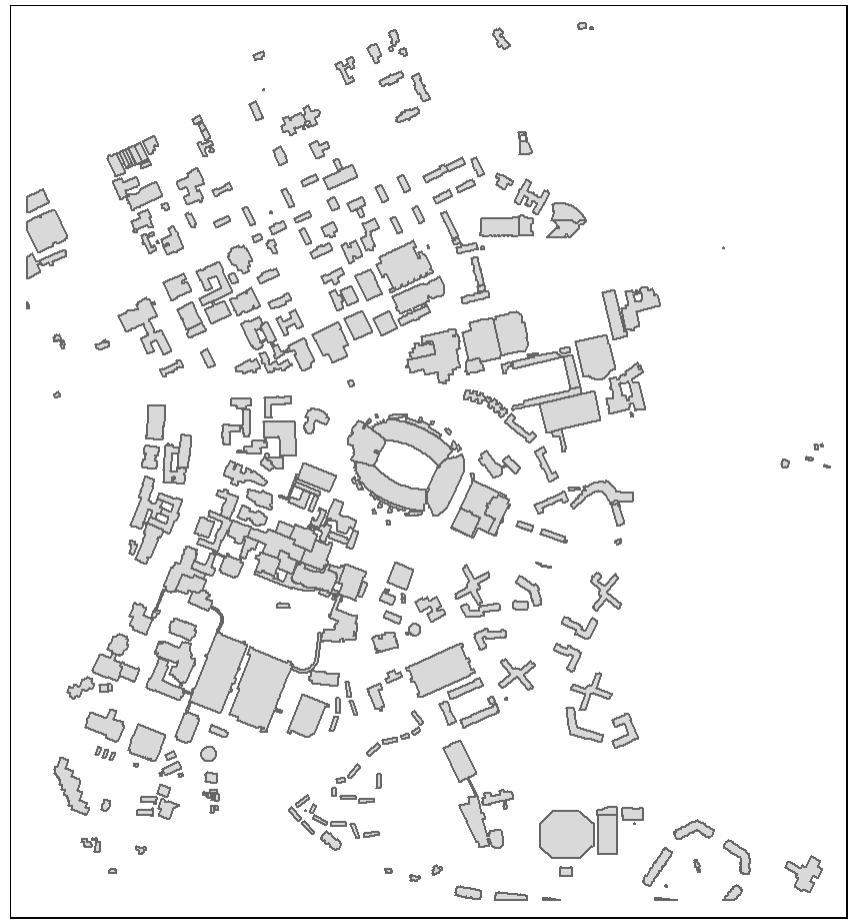
With no arguments, every building gets the same gray fill (Figure 10.8). That already shows the shape of campus, before any attribute is mapped.
10.4.2 Shade buildings by year built
Map fill to a numeric column, and you have a choropleth map: areas shaded by a value.
buildings |>
tm_shape() +
tm_polygons(fill = "YEARBUILT")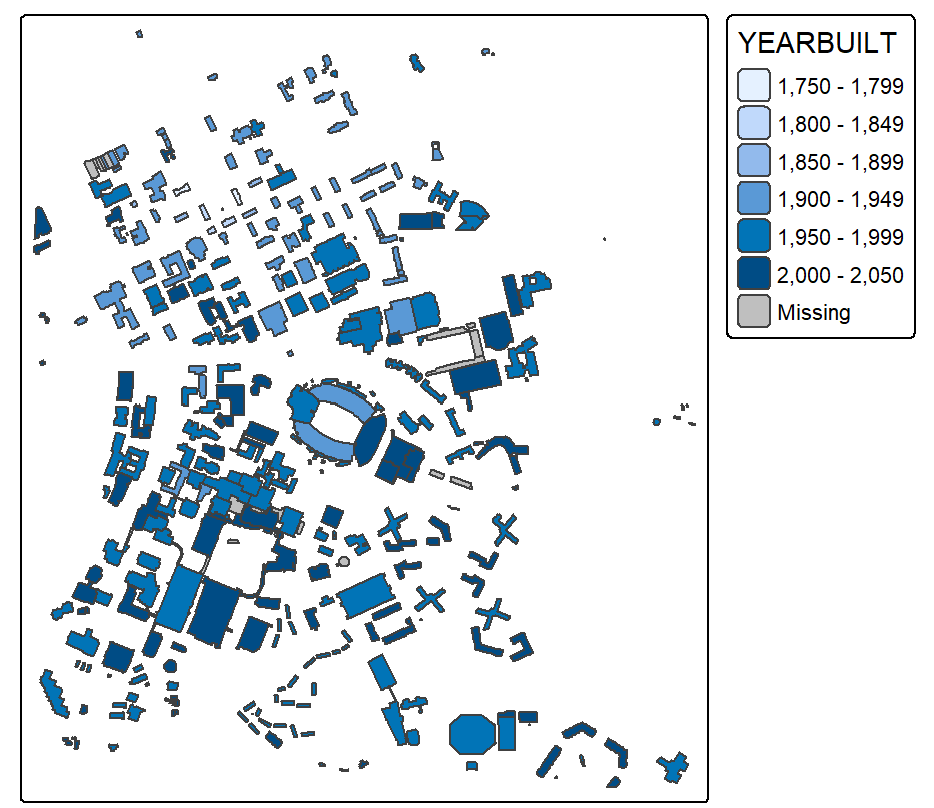
By default, tmap chooses “pretty” breaks, round numbers, here 50-year classes from 1750 to 2050 (Figure 10.9). Buildings with no year recorded are drawn gray and labeled Missing in the legend.
Where are the oldest buildings on campus? The newest? What does the map suggest about how the campus grew?
10.4.3 Control the classes with n and style
How many classes the map uses, and where the breaks between them fall, change what the reader sees. This is called classification, and two settings control it:
nsets the number of classes.stylesets the method for choosing the breaks."equal"makes equal intervals: every class covers the same range of values.
In tmap version 4, both go in a scale function, tm_scale_intervals(), given to the fill.scale argument:
buildings |>
tm_shape() +
tm_polygons(fill = "YEARBUILT",
fill.scale = tm_scale_intervals(n = 4, style = "equal"))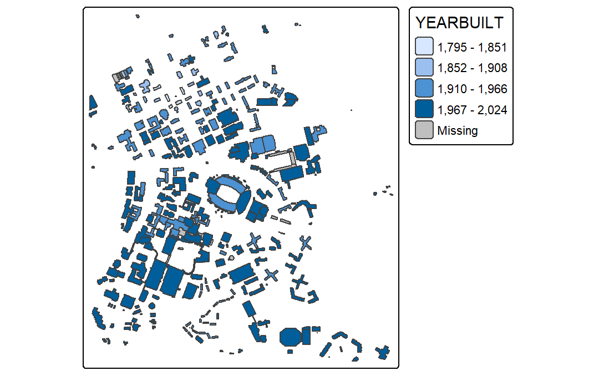
Equal intervals split the range from the oldest building to the newest into four equal parts (Figure 10.10). You can also write tm_polygons(fill = "YEARBUILT", n = 4, style = "equal"), the shorter form from version 3. It still works, but tmap prints a message suggesting fill.scale. Other styles include "quantile" (the same number of buildings in each class) and "jenks" (Jenks natural breaks, which puts the breaks in the biggest gaps between values). Later chapters return to classification, because the choice can change the story a map tells.
10.5 Putting a map together
10.5.1 Combine points, lines, and polygons
To draw several layers in one map, save each layer as its own object, then add them together with +:
# 1. Define independent layers
map_buildings <- buildings |>
tm_shape() +
tm_polygons(fill = "FLOORS")
map_sidewalks <- sidewalks |>
tm_shape() +
tm_lines()
map_trees <- trees |>
tm_shape() +
tm_dots(fill = "HEIGHT", size = 0.02)
# 2. Add them together, placing buildings first to set the map extent
map_buildings + map_sidewalks + map_trees +
tm_title("UNC Chapel Hill Campus Map") +
tm_layout(bg.color = "#eeeeee")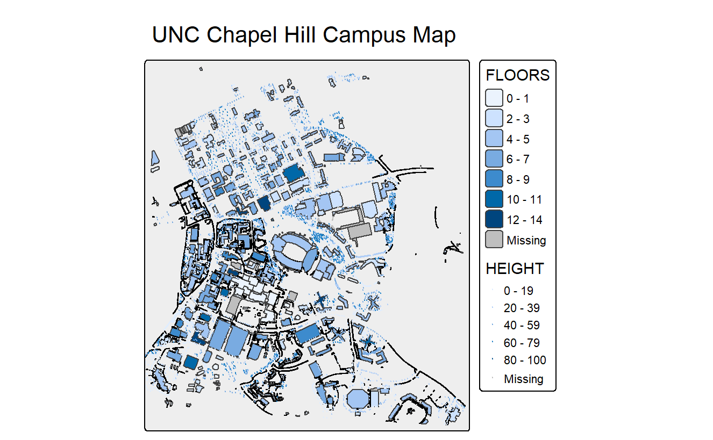
Each layer draws on top of the ones before it, so put the polygons first, then the lines, then the points; otherwise the buildings would cover the trees. The first layer also sets the map’s extent, the area the map shows. tm_title() and tm_layout() style the whole map, so they go at the end, after all the layers.
10.5.2 Add a scale bar and north arrow
A reader expects a finished map to have a scale bar and a north arrow:
map_buildings + map_sidewalks + map_trees +
tm_title("UNC Chapel Hill Campus Map") +
tm_layout(bg.color = "#eeeeee") +
tm_scalebar(position = c("left", "bottom")) +
tm_compass(type = "8star", position = c(0.7, 1))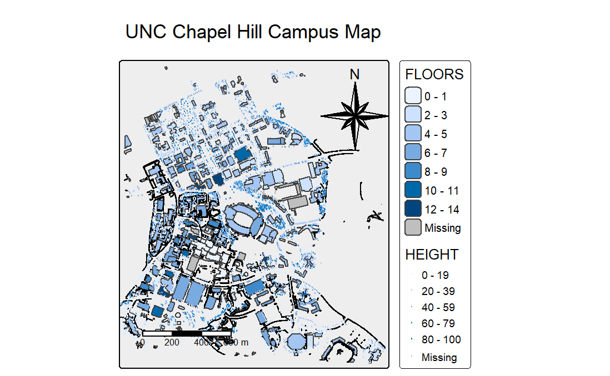
tm_scalebar() adds a scale bar, which shows how distances on the map relate to distances on the ground. tm_compass() adds a north arrow; type = "8star" is one of several styles. position places each one, either by name, such as c("left", "bottom"), or by numbers from 0 to 1 that give the share of the way across and up the map frame. Put them where they don’t cover any data.
10.5.3 Static or interactive: tmap_mode()
tmap has two modes, and the same code works in both:
tmap_mode("view") # interactive web map
tmap_mode("plot") # static map (the default)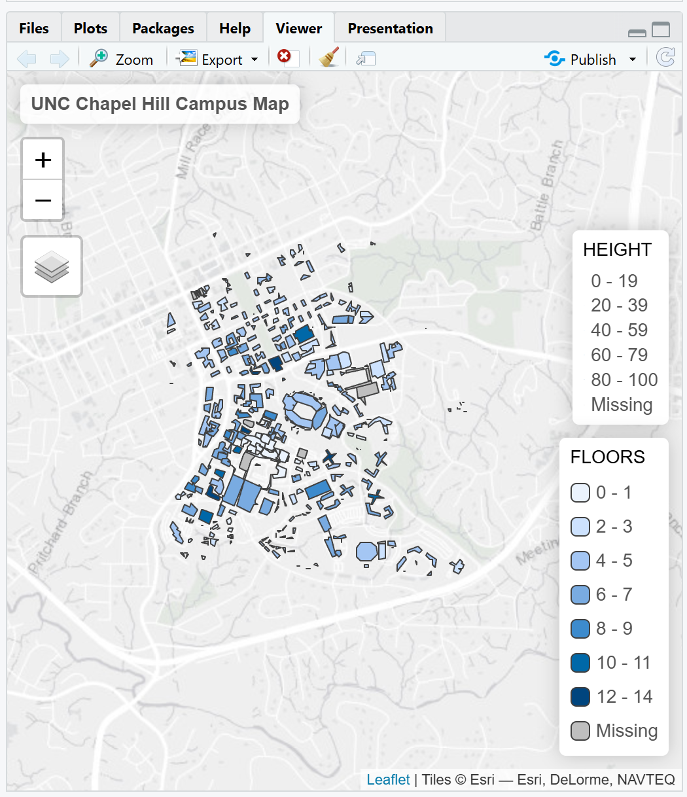
After tmap_mode("view"), every map becomes an interactive map on top of a basemap of streets and place names (Figure 10.13). You can pan, zoom, and click on any feature to see its attributes. It is the best way to explore your data. The basemap tiles load from the web, so view mode needs an internet connection. tmap_mode("plot") switches back to static maps, which are what you want for reports, slides, and anything printed.
10.6 Practice: map the world
These steps follow the in-class exercise. tmap comes with three world layers, so you don’t need to download anything.
Step 1: set up. Start a new R Markdown file, and load the packages and data:
library(tidyverse)
library(sf)
library(tmap)
data(World)
data(metro)
data(rivers)Step 2: look at the data. Use glimpse() on World, rivers, and metro. Which is a point layer, which is a line layer, and which is a polygon layer? Which column of metro holds the projected population in 2030?
Step 3: make the map. Make one tmap that shows the countries, rivers, and metro areas. As a stretch, size the metro areas by their projected 2030 population.
# 1. Create individual maps
map_rivers <- rivers |>
tm_shape() +
tm_lines(col = "lightblue", lwd = 0.7)
map_metro <- metro |>
tm_shape() +
tm_bubbles(size = "pop2030", fill = "orange")
map_world <- World |>
tm_shape() +
tm_polygons(fill = "name", fill.legend = tm_legend_hide())
# 2. Plot all the layers together
map_world + map_rivers + map_metro +
tm_title("2030 Projected Metro Population") +
tm_layout(bg.color = "lightblue")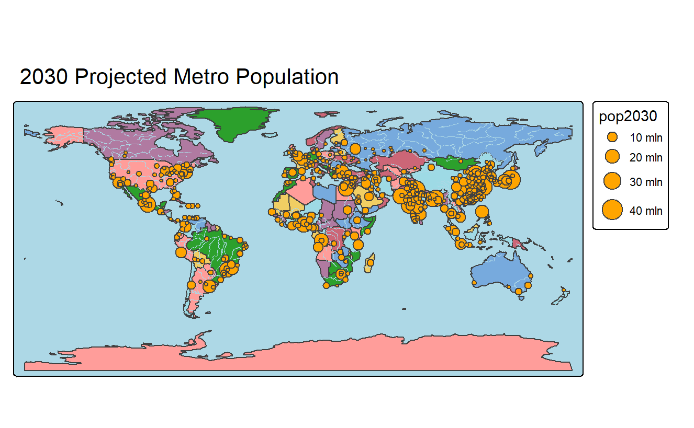
The layers go in order: countries first, then rivers, then the metro bubbles on top. tm_bubbles() draws circles sized by a column, here pop2030. Notice the difference between setting and mapping, just as in ggplot2: fill = "orange" is a color, so every bubble is orange, while size = "pop2030" is a column, so the size comes from the data. Filling the countries by name gives each one its own color, and fill.legend = tm_legend_hide() hides the legend, which would otherwise list 177 countries.
10.7 Check your understanding
In an sf object, each row is one:
Which tmap function names the data to draw, at the start of each layer?
Which layer function draws polygons?
To color sidewalk lines by a column, you use
col =rather thanfill =, because a line has no inside to fill.For a numeric column such as
HEIGHT, tmap’s default colors are a:In
tm_scale_intervals(n = 4, style = "equal"), what doesnset?When you add layers together, the first layer sets the extent of the map.
Which function adds a north arrow?
Which mode makes an interactive map that you can pan and zoom?
fill colors the inside of a dot or a polygon. A line is only an outline, so tmap colors it with col, the same name ggplot2 uses for the color of lines and outlines.
10.8 Summary
- An sf object is a tidy data frame of spatial features, one per row, with their attributes in the columns and their shapes in a geometry column. Read a file into one with
read_sf(). - tmap builds a thematic map in layers:
tm_shape()names the data, andtm_dots(),tm_lines(), ortm_polygons()draws it. Layers are joined with+. - Color features by an attribute with
fill = "column"(dots and polygons) orcol = "column"(lines). Numbers get a sequential palette; text gets a qualitative palette. - Too many categories make a map unreadable:
filter()to the most common, or lump the rest together withmutate()andif_else(). - Classification decides how many classes a map uses and where the breaks fall:
fill.scale = tm_scale_intervals(n = 4, style = "equal"). - Combine layers with
+, with polygons first and points last. Finish withtm_title(),tm_scalebar(),tm_compass(), andtm_layout(). tmap_mode("view")makes interactive web maps for exploring;tmap_mode("plot")makes static maps for reports.
10.9 Exercises
Use the three campus layers for exercises 1 to 4, and tmap’s World data for 5 and 6.
- Floors. Make a choropleth map of the buildings, shaded by
FLOORS. Then tryn = 3andn = 7. Which do you find easiest to read? - Classification styles. Map
YEARBUILTwithstyle = "equal","quantile", and"jenks", each with five classes. How do the breaks differ? Which map makes campus look oldest? - One species. Map only the willow oaks, as dots on top of the building footprints. Give the map a title, a scale bar, and a north arrow.
- Sidewalk lengths. How many sidewalk segments are made of each surface? Use
st_drop_geometry()andcount(). Then tryst_length()insidemutate()to find the total length of each surface. Is the answer different? - A world choropleth.
Worldhas a column calledlife_exp, life expectancy. Make a choropleth of it with five classes. Which regions stand out? - Explore. Switch to
tmap_mode("view")and draw your map from exercise 5. Click on a few countries. Then switch back withtmap_mode("plot").
10.10 Further reading
- The tmap website, https://r-tmap.github.io/tmap/, has a getting-started guide and many examples, all in version 4 syntax.
- Geocomputation with R (2nd ed.), by Robin Lovelace, Jakub Nowosad, and Jannes Muenchow, free at https://r.geocompx.org. Its “Making maps with R” chapter covers tmap in depth, including faceted and animated maps.
- The sf website, https://r-spatial.github.io/sf/, explains simple features and has a cheatsheet for its functions.
+ and drawn on top
of the layers before it. In GIS, a layer holds one theme of features,
such as roads or soils.
“Simple features”: the R package for spatial vector data. An sf object
is a data frame with a geometry column holding each row’s point, line,
or polygon.
One spatial object in a layer of data, such as one tree, one sidewalk
segment, or one building. In an sf object, each row is a feature.
A non-spatial fact about a spatial feature, such as a tree’s species or
a building’s year built. Attributes are the columns of a layer’s
attribute table.
Dividing a numeric variable into a few classes for a map, by choosing
how many classes there are and where the breaks between them fall.
A bar on a map that shows how distances on the map relate to distances
on the ground.
A symbol on a map that shows which direction is north. In tmap,
tm_compass().
A web map you can pan, zoom, and click to see each feature’s attributes.
tmap makes one in view mode.
The tidyverse package for making plots and maps by adding layers.
A map that shows how one theme, such as income, tree height, or building
age, varies from place to place.
The use of data that have a location attached to answer questions about
the world. It combines what we study (the spatial), how we
handle it (data skills), and how we ask and answer questions
(science).
An R package for making thematic maps quickly, with sensible defaults.
A bundle of code, written by other users, that adds new functions to R.
Install it once with install.packages(), then load it in
each session with library().
Spatial data stored as points, lines, and polygons, each with a table of
attributes. In R, the sf package handles vector data.
A document format (.Rmd) that mixes formatted text with
chunks of R code. Knitting it runs the code and builds a finished
report.
The integrated development environment (IDE) where you write and run R.
R does the computing; RStudio is the workspace around it.
Data arranged so that each variable is a column, each observation is a
row, and each value has its own cell.
R’s table: rows are observations and columns are variables. A tibble is
the tidyverse’s version of a data frame.
The column of an sf object that holds each feature’s shape: a point, a
line, or a polygon.
A family of R packages (including dplyr,
ggplot2, and readr) for reading,
cleaning, reshaping, summarizing, and plotting data, all designed to
work together.
Code that takes inputs (arguments), does a job, and returns an output,
such as mean(temps).
An input to a function, written inside its parentheses.
A plain file of R code, ending in .R. Anything that isn’t
code must be written as a comment.
An open, plain-text format for vector features, written in JSON.
Coordinates are longitude first, then latitude, in WGS84.
The rules that tie coordinates to places on the Earth, including how the
round Earth is flattened onto a map (the projection). Layers must share
a coordinate system before you can combine them.
The angle east or west of the Prime Meridian, from 0° to 180°. Lines of
equal longitude are meridians.
The angle north or south of the Equator, from 0° to 90°. Lines of equal
latitude are parallels.
Colors that run from light to dark, used for numbers so that bigger
values look darker.
The key that explains what the colors, sizes, or shapes on a plot or map
mean. ggplot2 and tmap build one for every mapped aesthetic.
Distinct colors with no order, one per category, used for text columns
such as species names.
A map that shades areas, such as counties or buildings, by the value of
a variable.
A classification method that makes every class cover the same range of
values.
The rules that turn data values into visual values: which colors, which
classes, which axis breaks. Every mapped aesthetic has one, and
functions such as scale_fill_manual() or
tm_scale_intervals() change it.
A way of dividing values into map classes that puts the breaks where the
gaps between values are largest, so similar values share a color.
The area a map or a layer covers, from its westernmost to easternmost
and southernmost to northernmost points.
A background map of streets, places, or imagery, loaded from the web as
tiles, that your own data are drawn on top of.
A method for flattening the curved graticule onto a flat map. Every
projection distorts shape, area, distance, or direction.
Giving every mark the same fixed value, outside aes(), as
in geom_point(color = "blue"). It is a design choice, not a
data choice.
The exact rules for writing code: spelling, capitalization, commas,
quotation marks, and matching brackets.
A one-page summary of a package or tool. Posit publishes them for dplyr,
ggplot2, RStudio, and more.